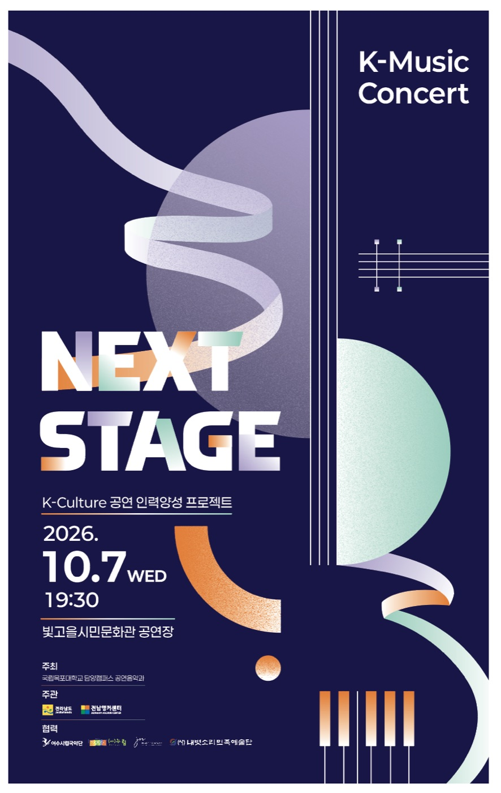
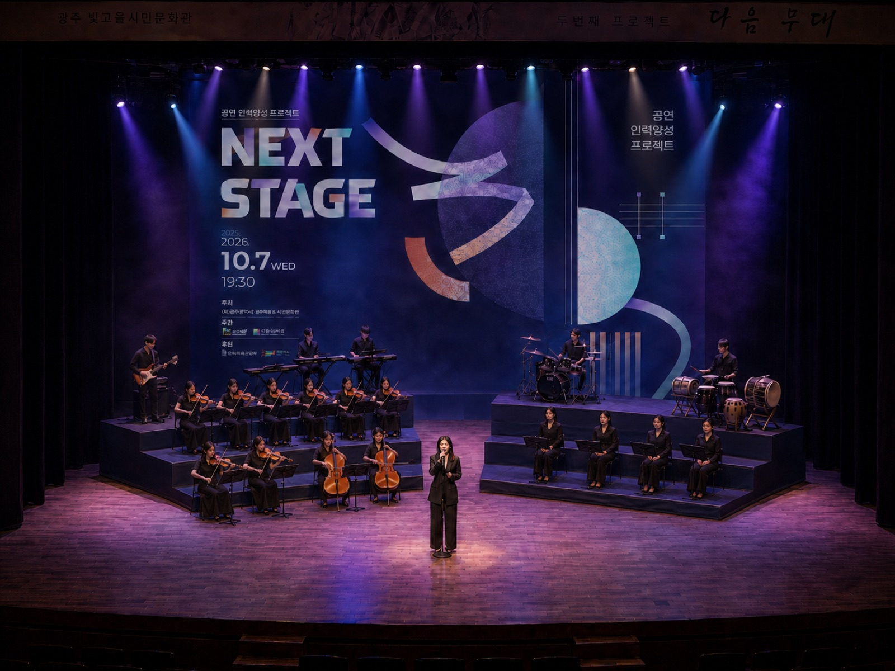
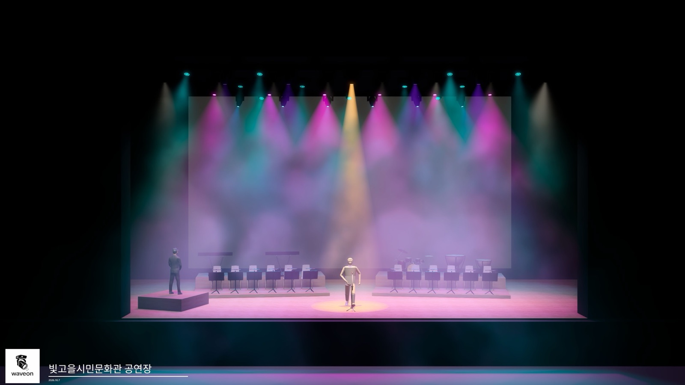
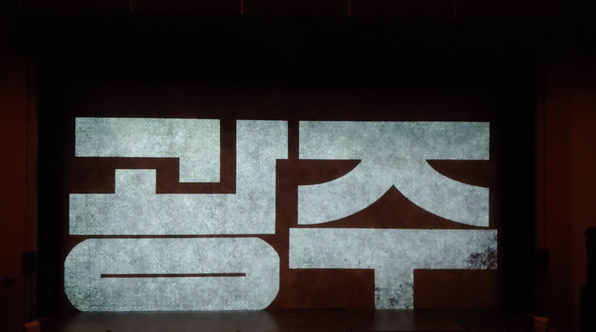
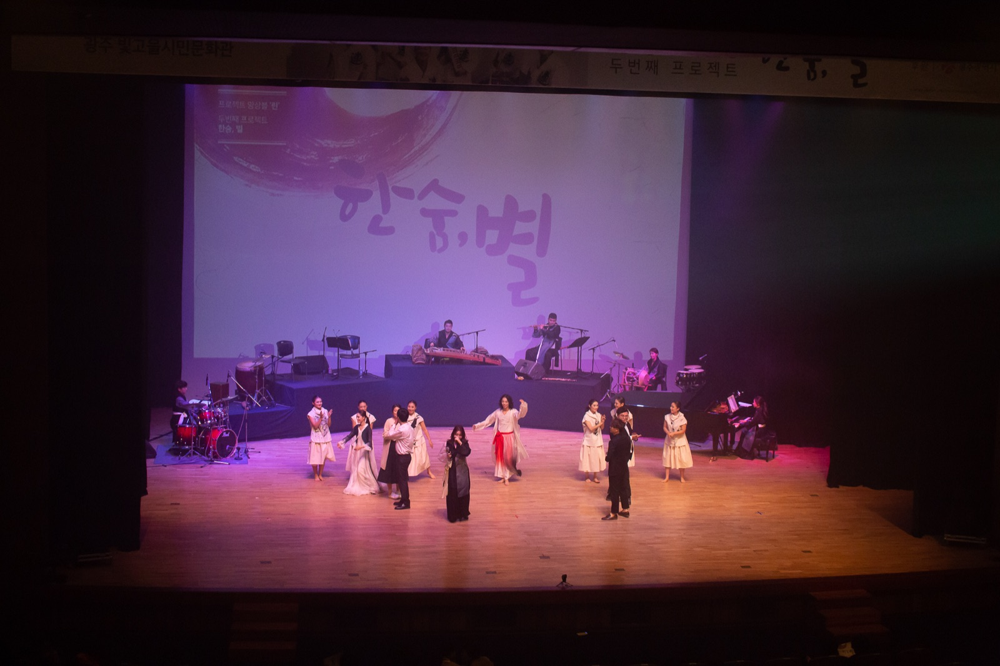
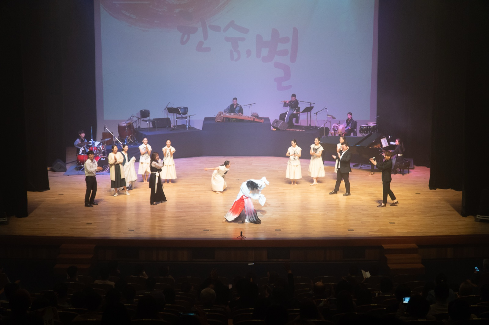

전남앵커 공연음악 인력양성 프로젝트
NEXT STAGE
공연 운영 통합 자료
큐 진행, 사회 대본, 음향 · 영상 · 조명 계획, 무대 배치와 현장 공정을 한곳에서 관리합니다

순수 연주 시간
62분
1부 35분 24초 · 2부 26분 15초 (9/4 기준), 풍물 약 4분 별도
연주 곡
14곡
사회 6회, 영상 7편, 샤막 4회
마지막 3곡 보컬
14명
코러스 없이 앙상블 출연
스탭 콜타임
09:00
출연진은 13:00, 간식과 석식 제공
샤막 영사면
15m × 8m
샤막과 후방 스크린을 모두 사용
무전기
8대
빛고을시민문화관 대여
공연 런다운 (Run of Show)
곡, 사회, 영상의 진행 순서와 무지연 연결 구간을 한 장으로 정리했습니다

통합 운영 시스템
영역별로 묶인 14개 자료가 하나의 큐 상태(현재 큐 · 진행 시간)를 공유합니다. 상단 메뉴에서 영역을 고르면 아래 줄에 해당 자료가 나옵니다
변경 반영 현황 (10/6 기준)
대화방의 최신 결정을 모든 운영 자료에 적용했습니다
반영 완료
- 김채원 불참 반영: 신사랑가는 박설온 · 김영수, 홀로 아리랑은 김가희 · 신한비
- 국악기는 첫 곡만 무대 중앙, 이후에는 후방에 배치
- 악기 구성 정정: 스트링 10인, 국악기는 가야금 · 아쟁 · 대금 · 피리 · 모둠북
- 하우스 대기영상, 엔딩크레딧(이미지) 반영
- 보컬 · 코러스 마이크 계획(코러스는 스탠드 4개 통일), 마지막 3곡 앙상블 14명, 풍물 약 4분 연주
- 출연진 콜타임 13:00, 어셔 17:00, 음향 · 조명 황성훈 감독 합류
결정 대기
- 축전영상 삽입 위치와 샘플 선택
- 영상 챕터 1~3 삽입 위치와 대본 수정
- 사회 박한솔 콜타임
- 3번 곡 무선 마이크 개수와 앙상블 14명 마이크 방식
- 촬영팀 카메라 위치와 좌석 구역 수정
- 드레스 리허설 실측 후 총 러닝타임
준비 현장 기록
연습과 무대 구성, 조명 시뮬레이션 자료입니다. 좌우로 넘겨 보세요 (화살표, 드래그, 스와이프)




